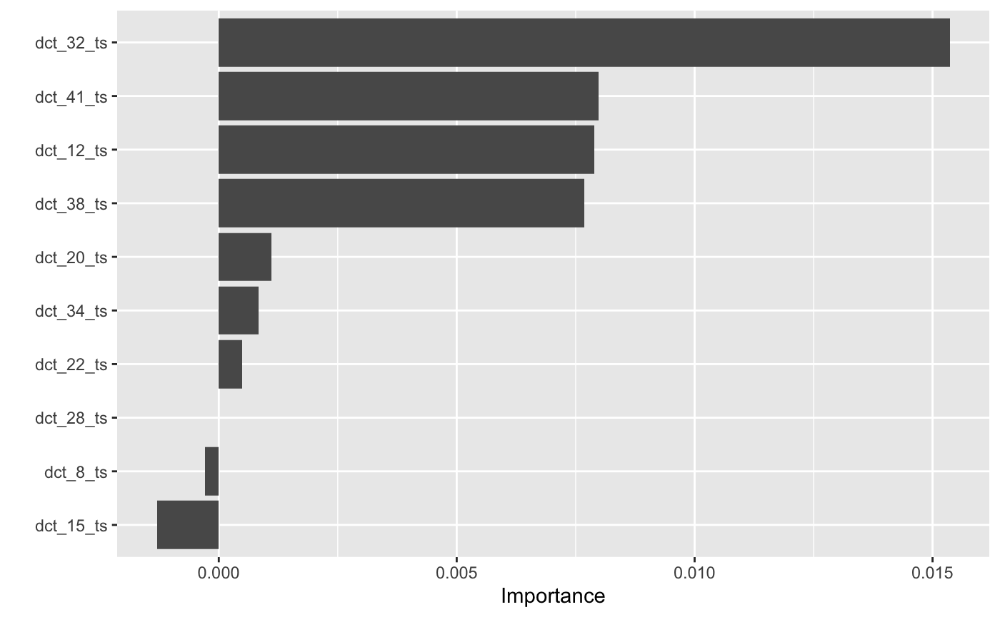
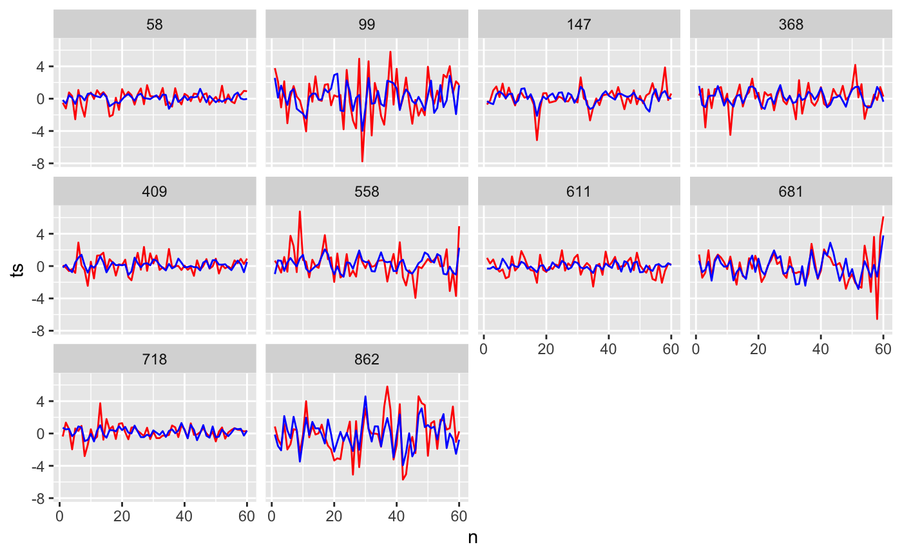
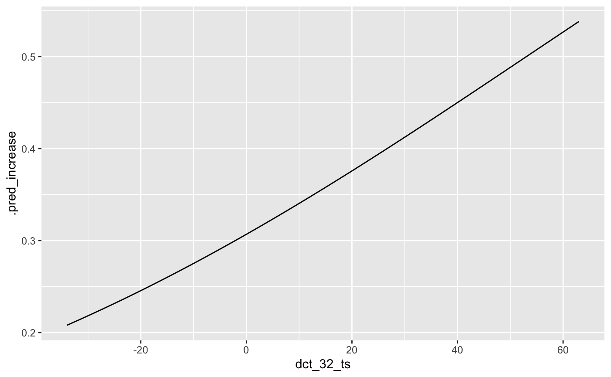
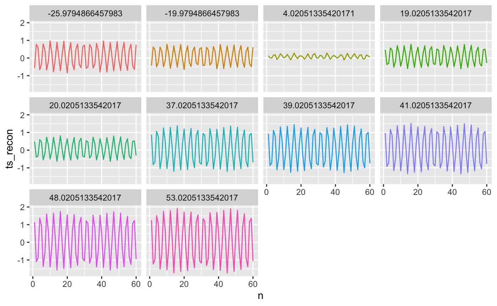

library(tsrecipes) library(tidymodels) #> ── Attaching packages ────────────────────────────────────────────────── tidymodels 0.1.1 ── #> ✓ broom 0.7.0 ✓ recipes 0.1.13 #> ✓ dials 0.0.8 ✓ rsample 0.0.7 #> ✓ dplyr 1.0.0 ✓ tibble 3.0.3 #> ✓ ggplot2 3.3.2 ✓ tidyr 1.1.0 #> ✓ infer 0.5.3 ✓ tune 0.1.1 #> ✓ modeldata 0.0.2 ✓ workflows 0.1.3 #> ✓ parsnip 0.1.3 ✓ yardstick 0.0.7 #> ✓ purrr 0.3.4 #> ── Conflicts ───────────────────────────────────────────────────── tidymodels_conflicts() ── #> x purrr::discard() masks scales::discard() #> x dplyr::filter() masks stats::filter() #> x dplyr::lag() masks stats::lag() #> x recipes::step() masks stats::step()
lg <- logistic_reg(penalty = tune(), mixture = 1) %>% set_engine("glmnet")
rec <- recipe(prices) %>% update_role(everything(), new_role = "var") %>% update_role(class, new_role = "outcome") %>% step_dct(ts, k = tune())
pipeline <- workflow() %>% add_model(lg) %>% add_recipe(rec)
cv_results <- pipeline %>% tune_grid( resamples = vfold_cv(prices), grid = coef_grid )
cv_results %>% collect_metrics() %>% filter(.metric == "accuracy") %>% arrange(desc(mean)) #> # A tibble: 120 x 8 #> penalty k .metric .estimator mean n std_err .config #> <dbl> <dbl> <chr> <chr> <dbl> <int> <dbl> <fct> #> 1 0.0001 16 accuracy binary 0.696 10 0.0153 Recipe3_Model01 #> 2 0.000127 16 accuracy binary 0.696 10 0.0153 Recipe3_Model02 #> 3 0.000161 16 accuracy binary 0.696 10 0.0153 Recipe3_Model03 #> 4 0.000204 16 accuracy binary 0.696 10 0.0153 Recipe3_Model04 #> 5 0.000259 16 accuracy binary 0.696 10 0.0153 Recipe3_Model05 #> 6 0.000329 16 accuracy binary 0.696 10 0.0153 Recipe3_Model06 #> 7 0.000418 16 accuracy binary 0.696 10 0.0153 Recipe3_Model07 #> 8 0.000530 16 accuracy binary 0.696 10 0.0153 Recipe3_Model08 #> 9 0.000672 16 accuracy binary 0.696 10 0.0153 Recipe3_Model09 #> 10 0.000853 16 accuracy binary 0.696 10 0.0153 Recipe3_Model10 #> # … with 110 more rows
cv_results %>% show_best("accuracy") #> # A tibble: 5 x 8 #> penalty k .metric .estimator mean n std_err .config #> <dbl> <dbl> <chr> <chr> <dbl> <int> <dbl> <fct> #> 1 0.0001 16 accuracy binary 0.696 10 0.0153 Recipe3_Model01 #> 2 0.000127 16 accuracy binary 0.696 10 0.0153 Recipe3_Model02 #> 3 0.000161 16 accuracy binary 0.696 10 0.0153 Recipe3_Model03 #> 4 0.000204 16 accuracy binary 0.696 10 0.0153 Recipe3_Model04 #> 5 0.000259 16 accuracy binary 0.696 10 0.0153 Recipe3_Model05
model <- pipeline %>% finalize_workflow(cv_results %>% select_best("accuracy")) %>% fit(data = prices)
model %>% pull_workflow_fit() %>% vip::vip()

step <- model$pre$mold$blueprint$recipe$steps[[1]]
prices_coef <- prices %>% bind_cols(model$pre$mold$predictors) price_recon <- prices_coef %>% reconstruct("ts", step, starts_with("dct_"))
price_recon %>% sample_n(10) %>% unnest(c(ts, ts_recon, n)) %>% ggplot(aes(n)) + geom_line(aes(y = ts), color = "red") + geom_line(aes(y = ts_recon), color = "blue") + facet_wrap(~id)

ts.32_imp <- prices_coef %>% summarise(across(starts_with("dct_"), mean)) %>% mutate(dct_32_ts = list(seq( min(prices_coef$dct_32_ts), max(prices_coef$dct_32_ts) ))) %>% unnest(dct_32_ts) %>% bind_cols(predict(pull_workflow_fit(model), ., type = "prob")) ts.32_imp %>% ggplot(aes(dct_32_ts, .pred_increase)) + geom_line()

ts.32_recon <- ts.32_imp %>% reconstruct("ts", step, starts_with("dct_"))
set.seed(10) ts.32_recon %>% select(dct_32_ts, ts_recon, n) %>% sample_n(10) %>% unnest(c(ts_recon, n)) %>% ggplot(aes(n, ts_recon, color = as.factor(dct_32_ts))) + geom_line(show.legend = FALSE) + facet_wrap(~dct_32_ts)

prices %>% count(class) %>% mutate(n / sum(n)) #> # A tibble: 2 x 3 #> class n `n/sum(n)` #> <fct> <int> <dbl> #> 1 no_increase 663 0.687 #> 2 increase 302 0.313